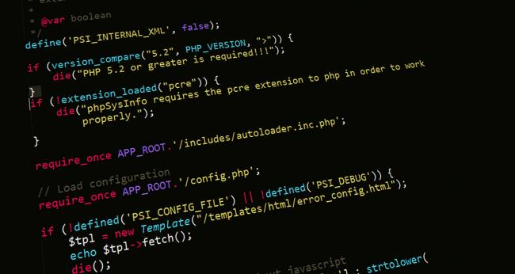
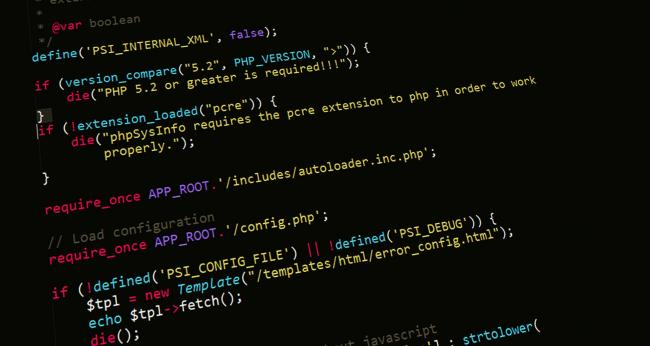

JavaScript is one of the most popular programming languages in the world, and its popularity can be attributed to several key factors:
1. Ubiquity in Web Development
JavaScript is the only programming language that can run natively in web browsers, making it indispensable for front-end development. Every major web browser supports JavaScript, which allows developers to create dynamic, interactive user experiences. This widespread support has cemented JavaScript as a fundamental technology of the web.
 

2. Versatility
JavaScript is not limited to front-end development; it can also be used on the server side with environments like Node.js. This versatility allows developers to use a single language for both client-side and server-side development, streamlining the development process and making it easier to manage codebases.

3. Large Ecosystem and Community
JavaScript has a vast ecosystem of libraries and frameworks such as React, Angular, and Vue.js, which significantly simplify and accelerate the development of complex applications. Additionally, the large and active community continuously contributes to the language's growth, providing support, tools, and resources for developers of all skill levels.
4. Continuous Evolution
JavaScript has evolved significantly since its inception. The introduction of ECMAScript standards has brought modern features and improvements to the language, making it more powerful and easier to use. Regular updates ensure that JavaScript remains relevant and continues to meet the demands of modern web development.


5. Cross-Platform Development
With tools like Electron, JavaScript can be used to build cross-platform desktop applications. This means developers can use their JavaScript skills to create applications that run on Windows, macOS, and Linux, further broadening the language's applicability.
6. Job Market Demand
The demand for JavaScript developers is consistently high. As businesses seek to create engaging and responsive web applications, the need for skilled JavaScript developers continues to grow. This demand translates into numerous job opportunities and attractive salaries for those proficient in the language.